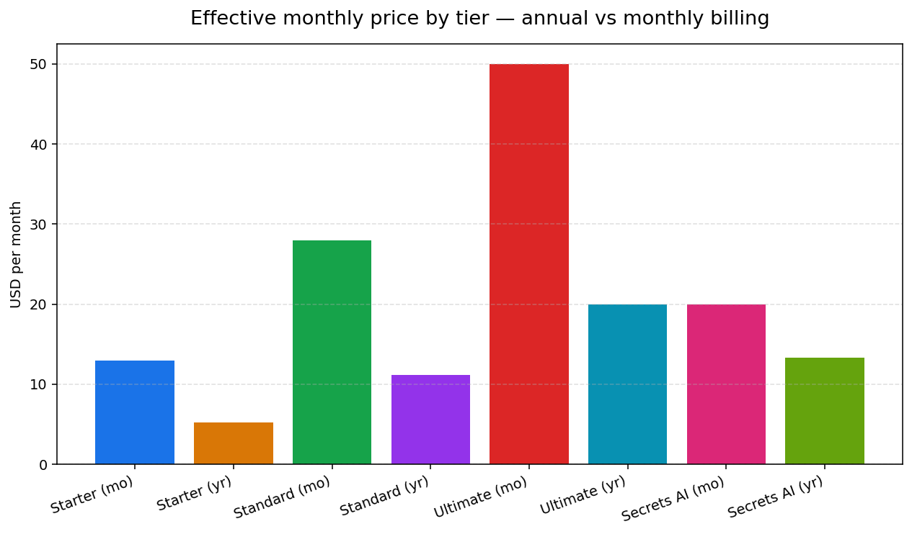
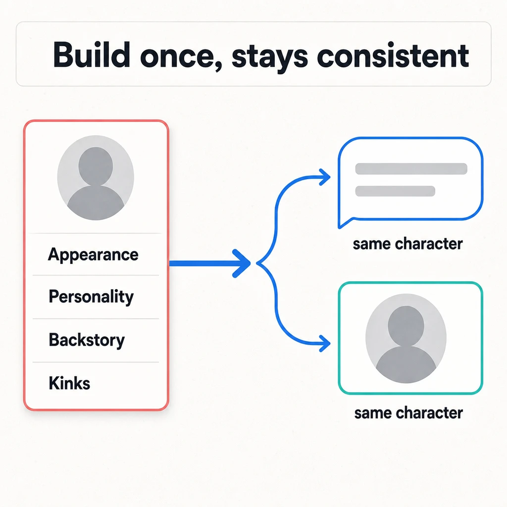
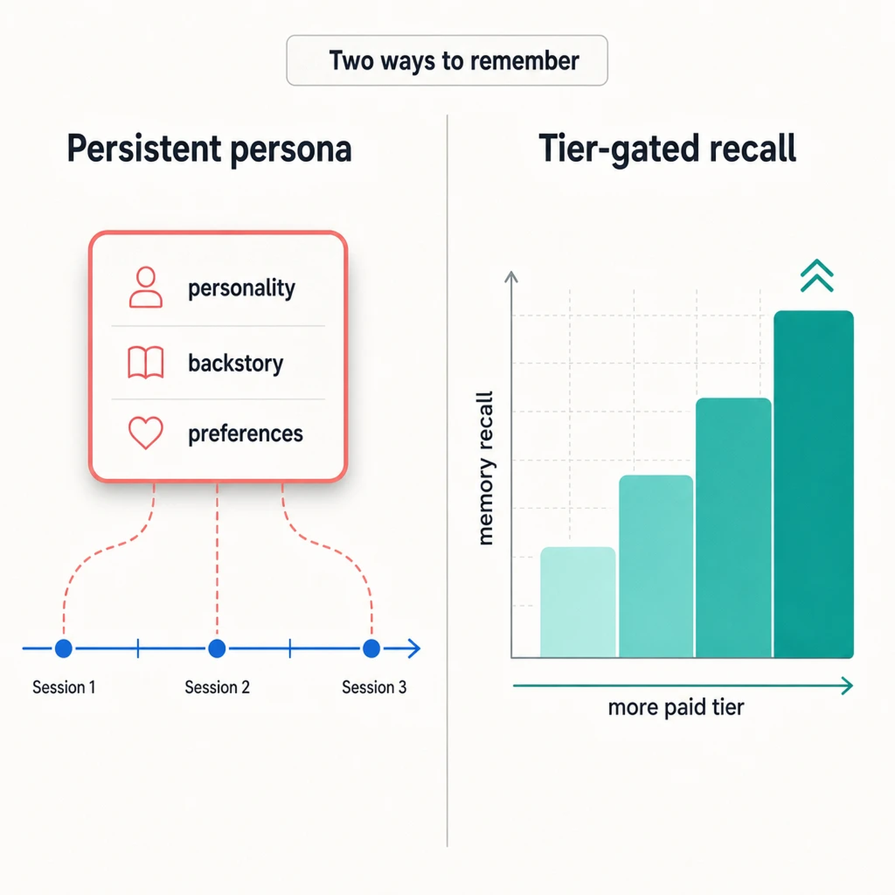
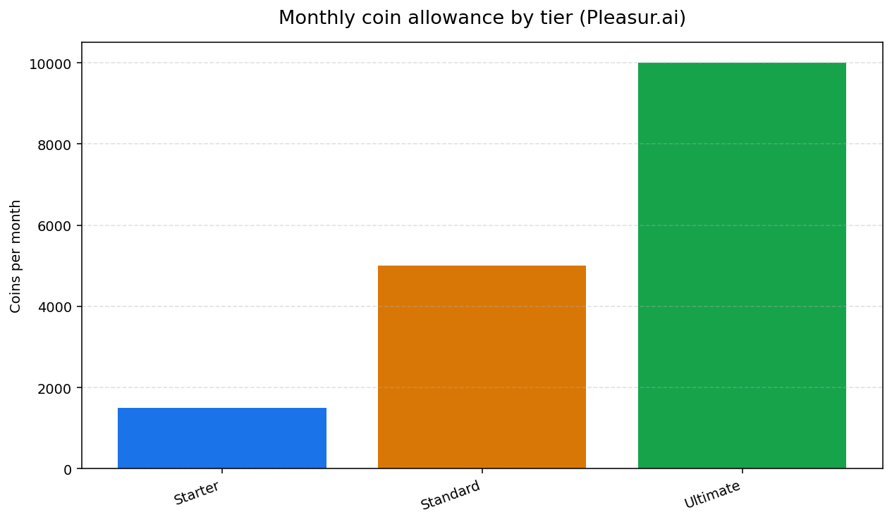
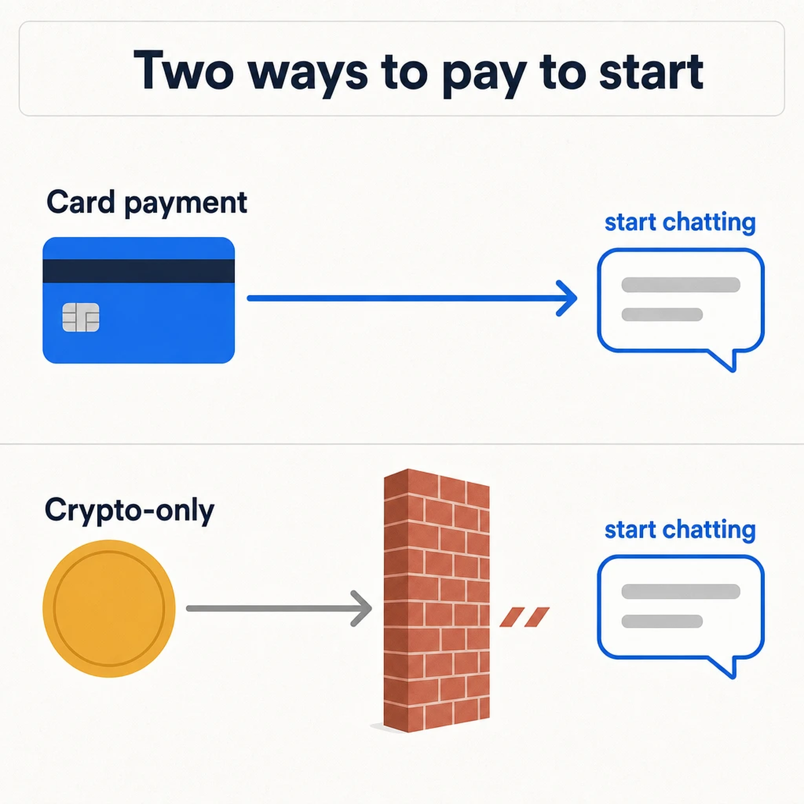

Pleasur.ai vs Secrets AI
Every page that ranks for this matchup is either a single-product affiliate review or a nine-app "best alternatives" list. Nobody has actually put these two side by side. So here it is.
Pleasur.ai and Secrets AI are both premium 18+ AI companion apps with NSFW chat, image generation, and voice. The short answer: pleasur.ai's entry Starter tier ($12.99/mo, or $5.20/mo billed yearly) is cheaper than Secrets AI ($19.99/mo, $13.33 yearly) while matching its core features — and its persona keeps your shared history.
That's the headline, but it isn't a price war. Both apps are credible, and Secrets AI brings a genuinely deep media engine. The real question is what you get for what you pay, and which one feels like the same companion two weeks in. If you're switching from another app, our Replika alternative breakdown covers that path too.
What follows is a true side-by-side: the real prices, what each app remembers about you, how deep the NSFW and image features go, and the payment-friction angle most reviews skip entirely.
At a glance: Pleasur.ai vs Secrets AI
Here is the whole comparison in one screen. The rest of the article explains the call behind each cell — but if you only read one thing, read this.
| Axis | Pleasur.ai | Secrets AI |
|---|---|---|
| Pricing (monthly) | Starter $12.99 · Standard $27.99 · Ultimate $49.99 | $19.99 (Premium) |
| Pricing (annual, effective /mo) | $5.20 · $11.20 · $20.00 | ~$13.33 (standard, non-sale) |
| Memory / continuity | Persistent persona carries your shared history forward across sessions — felt continuity, no published spec number | Markets "adaptive memory"; its store labels tiers "4x" and "6x Memory Recall vs Free" — its own claim, not an independent benchmark |
| NSFW capability | Adult chat on every tier within stated rules; build appearance, personality, and kinks in the Companion Creator | Adult chat and sexting; says it offers NSFW image and video generation |
| Image generation | On-demand, in-chat, prompt-driven; media costs coins (10 per image) | Routed through its Moments credit system |
| Voice | Voice notes on all tiers (10 coins each); in-chat real-time phone calls on Standard and Ultimate (50 coins/min) | Voice notes and voice calls, metered through Moments |
| Free tier | Limited free messages (censored) | Capped free tier (Secrets describes around 20 messages/day) |
Two cells deserve a footnote before you skim past them. Secrets AI's "6x recall" is the label on its own paid tier, not a number an outside reviewer measured. And both companies run promotions — Secrets AI in particular runs heavy sales — so treat every figure above as a dated, standard-rate snapshot, not a permanent price tag.
The first cell people argue about is price. So let's settle that one straight.
Pricing: which one actually costs less
At the matched entry tier, pleasur.ai is the cheaper of the two on both billing cycles — $12.99/mo, or $5.20/mo on annual billing, against Secrets AI's $19.99/mo ($13.33 yearly).
pleasur.ai runs three tiers, and the entry one already does the job. Starter is $12.99/mo ($5.20 billed yearly) with 1,500 coins a month, and it includes adult chat, AI image generation, voice notes, and the AI Companion Creator where you build your character. Standard is $27.99/mo ($11.20 yearly) with 5,000 coins and adds in-chat phone calls. Ultimate is $49.99/mo ($20 yearly) with 10,000 coins and early access to new features. There is no $19/mo plan — if you've seen that figure quoted, it's wrong.
Here's the place Secrets AI wins, and it's worth saying plainly: pleasur.ai's Standard tier at $27.99/mo costs more month-to-month than Secrets AI's $19.99. On annual billing that flips — Standard works out to $11.20/mo against Secrets AI's $13.33 — but if you pay monthly and want the mid tier, Secrets AI is the lighter monthly hit.
What matters for most buyers is the entry point, and that's where the comparison is clean: $12.99 beats $19.99 monthly, and $5.20 beats $13.33 yearly, with the Starter tier already covering the feature set people compare these two apps on.
One caveat on every number here. Secrets AI runs sale pricing often, so its live store can show steep discounts that don't last. The figures above are standard, non-sale rates — anchor to those and treat any promo as a bonus, not the baseline.

Price only matters if both apps actually do what you're paying for. Start with the adult content itself.
NSFW capability: what each one actually does
Both apps are built for adult use — explicit chat plus image generation — so NSFW isn't the thing that separates them. How it's delivered is.
pleasur.ai puts adult chat on every tier, with fewer content restrictions for adult roleplay within its stated rules. The build step is the AI Companion Creator: you set appearance, personality, backstory, and kinks, then chat with that exact character. Images are generated on demand, prompt-driven, and you can create them inside an existing chat thread rather than bouncing to a separate tool. Because the companion you built stays consistent, the images keep the same character instead of a fresh stranger each time. The build-a-companion workflow is the same one our AI girlfriend simulator walkthrough covers in full, so this isn't the place to re-run it end to end.
Secrets AI covers the same ground from a different shape. It does adult chat and sexting, and says it offers NSFW image and, per its app-store listings, video generation. Those media features run through its Moments credit economy — the currency you spend to generate.
The practical difference is gating. On pleasur.ai, the core chat isn't where the meter bites; you spend coins on the media you generate. On Secrets AI, media generation draws from Moments. Both are reasonable models. Which suits you depends on whether you mostly talk or mostly generate.

Doing NSFW is table stakes. Remembering who you are between sessions is where companions actually separate.
Memory and continuity: does it remember you?
pleasur.ai leans on a persistent persona that carries your shared history forward across sessions. Secrets AI markets an "adaptive memory" it labels "6x Memory Recall vs Free" — but that's its own tier label, not an independently benchmarked figure.
Here's the qualitative version of pleasur.ai's edge. The character you build in the Companion Creator keeps its personality, backstory, and preferences, and references earlier moments as you keep talking. Build the character once and she stays that character — that's the payoff of the persona model. It's felt continuity for ongoing adult roleplay, not a retention percentage on a spec sheet. No app in this comparison publishes a numeric memory window, so treat memory as a felt quality, not a number to rank.
Secrets AI's memory story is bigger on paper, and it's worth laying out as theirs. Secrets AI describes "6x recall" on its top tier and "4x" on the one below. It says its Ultimate tier holds a companion's physical traits across "100+ Moments" for visual consistency. It describes a group chat feature with per-companion memory threads, and a "Time Travel" tool for rewinding and editing a conversation. Each of those is Secrets AI's own marketing claim from a single source, not something an outside test has verified — so weigh them as claims, not as settled fact. There's no fair counter-number to put against them, so this page doesn't invent one.
One thing both apps share, and it's worth being precise about: both meter media through credits or coins. pleasur.ai's core text chat is unlimited — text isn't coin-gated — while image generation, voice notes, and calls draw down your coin balance. Secrets AI meters its media through Moments. So the honest line is "both apps meter media; pleasur.ai's text chat is unlimited," not "pleasur.ai has no meter."
If you want the category-level argument — every major companion ranked on how well it remembers you — that lives on our guide to the AI girlfriend with the best memory. This page owns the head-to-head; that one owns the field.

Memory keeps you coming back. Voice is what makes a session feel present — and here the two apps draw the line differently.
Voice, calls, and the Moments credit system
Both apps offer voice; the real difference is the metering. pleasur.ai keeps text chat unlimited and charges coins for media, voice, and calls, while Secrets AI runs voice and media through its Moments economy.
On pleasur.ai, voice notes are live on every tier at 10 coins each — you tap the speaker icon next to a reply and hear it spoken in the character's assigned voice, without leaving the chat. Standard and Ultimate add real-time in-chat phone calls at 50 coins/min: you tap the Call button on the character's profile and have a two-way voice conversation. Because the call launches from the same chat thread, you can move from text to a call mid-conversation and pick the text right back up where the call ended — the companion doesn't forget what you were just talking about. These are voice features inside the chat, not a separate product. (Voice, to be exact — there's no two-way video call here.)
Secrets AI's Moments System is a credit currency that powers its image and video generation and its voice. Heavy media use drains it fast; its unlockable media bundles are cited in the thousands of Moments. That's not a knock — it's just the shape of the model. The faster you generate or call, the faster the balance moves.
The friction sits in the same place for both apps: media and voice cost credits, and you'll watch a balance tick down. The one difference worth keeping in mind is that on pleasur.ai, the text conversation itself never hits that meter.

Metering aside, the question every buyer actually opens with isn't a feature. It's "can I trust this app at all?"
Is it legit? Trust, privacy, and ratings
Both are real, 18+-gated products from active companies. The bigger trust trap isn't the apps themselves — it's brand confusion with similarly named sites.
This category's number-one pre-purchase question is "scam or legit," and the answer gets muddied by two things. Automated trust scanners routinely mis-flag adult-AI domains, and there are near-identical names in the wild — a separate site called pleasures.ai scores badly on those scanners and gets confused for this one. None of that tells you much about either app you're actually comparing.
For a like-for-like signal, the independent review site genfindr rates Secrets AI 7.3/10. Secrets AI earns that with real strengths: it's genuinely multimodal, it leans hard on privacy and anonymity in its marketing, and it gates content at 18+. It's a serious competitor, not a strawman.
pleasur.ai's trust posture is straightforward card billing and clear age-gating, with privacy practices set out in a published policy. The standard worth holding here is that no app can promise perfect security, and you should read the policy rather than the marketing — our guide to what data AI girlfriend apps collect walks through exactly what to check before you trust any of them.
One trust factor reviews almost never name is how you actually pay — and that's where a third option makes the point.
NSFW AI companion without crypto payment required
Both pleasur.ai and Secrets AI take ordinary card payments. That sounds obvious until you've shopped this category and hit a crypto-only wall.
Eternal AI is the example most people run into: it sells access through one-time credit packs paid in crypto, which means buying or holding tokens before you can even start chatting. For a lot of people that's a hard stop. pleasur.ai uses straightforward card payment with transparent billing; Secrets AI takes cards too. Neither asks you to touch a wallet.

It's a small thing that turns out to be a real buying axis. Card payment plus unlimited core text chat is the lowest-friction way to actually start using one of these apps — no token purchase, no per-message meter on the conversation, just sign up and talk.
If you're still weighing the two, the quick answers below settle the most common questions.
FAQ: Pleasur.ai vs Secrets AI
Which is better, Pleasur.ai or Secrets AI? Both are credible premium NSFW companions, so the better pick depends on what you weight. pleasur.ai wins on entry-tier value and on persona continuity — the companion you build stays that companion across sessions. Secrets AI brings a rich Moments media engine and a deeper set of described memory features. If price and a companion that stays consistent matter most, pleasur.ai; if you want the widest media toolkit, Secrets AI is the stronger shop.
Is pleasur.ai cheaper than Secrets AI? At the entry tier, yes, on both cycles: pleasur.ai Starter is $12.99/mo ($5.20 yearly) against Secrets AI's $19.99/mo ($13.33 yearly). The one exception is pleasur.ai's mid Standard tier, which at $27.99/mo is pricier monthly than Secrets AI but cheaper annually ($11.20). For most buyers starting at the entry tier, pleasur.ai is the lower-cost option — and it includes the compared feature set.
Which has better memory? pleasur.ai uses a persistent persona that carries your shared history forward; Secrets AI markets an "adaptive memory" it labels "6x recall," which is its own tier name rather than an independently benchmarked number. We don't put a counter-figure against it because no fair one exists. For the full category ranking, see our guide to the AI girlfriend with the best memory.
Does Secrets AI have NSFW? Yes — adult chat, sexting, and media generation, all 18+ gated. pleasur.ai matches it on adult chat and image generation, and adds unlimited text chat, a persona that holds its character across sessions, and ordinary card payment.
The bottom line
Secrets AI is a real, feature-rich competitor with a deep media engine and a memory story it markets hard. But at the tier most people actually start on, pleasur.ai is the better-value pick — cheaper on both billing cycles, with unlimited text chat and a persona that remembers your shared history instead of resetting on you.
The fastest way to judge continuity is to feel it. Create your companion on pleasur.ai — card payment, unlimited text chat, cancel anytime — and see whether she still sounds like herself a week later. If memory is your single deciding factor, our AI girlfriend with the best memory guide ranks the whole field.